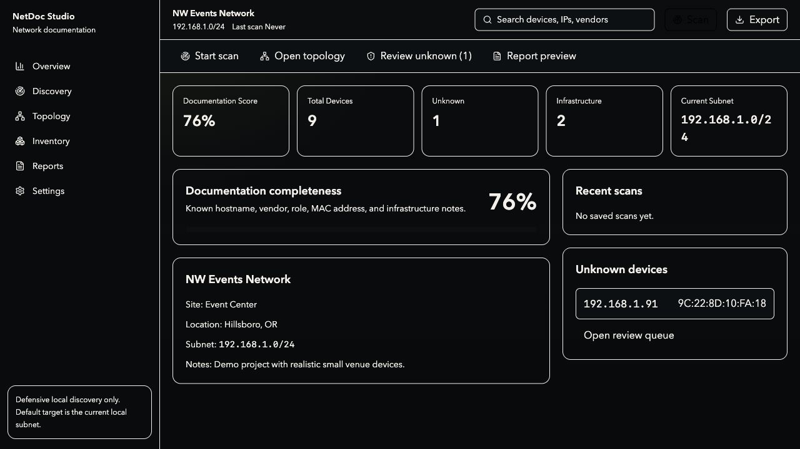

Uses safe local commands, ARP parsing, ping sweeps, and optional Nmap enrichment when available.
Desktop network documentation
Turn a messy local network into a client-ready report.
NetDoc Studio scans local subnets, identifies devices, builds topology, and exports professional documentation for small businesses, venues, homelabs, and MSP technicians.
Preview build for macOS Apple Silicon. Only scan networks you own or have permission to document.

LocalDefensive subnet discovery
PDFClient report packs
MapDraggable topology
SafeNo exploit scanning
Built for real documentation work.
NetDoc Studio focuses on the workflow technicians actually need: scan, review, label, map, and export.
Review hostnames, IPs, MAC addresses, vendor matches, roles, notes, and confidence scores.
Generate an inferred network map, drag nodes, filter unknowns, and prepare a cleaner report view.
Client report packs
Export a polished PDF with project info, scan summary, inventory, unknown devices, topology, vendor breakdown, and a technician action plan.
- Executive SummaryOwners
- Technical AuditMSPs
- Handoff PacketTechnicians

Download NetDoc Studio
Get the current macOS Apple Silicon preview build. The project is early, but the core workflow is already working: create a project, scan locally, review devices, build topology, and export PDF reports.